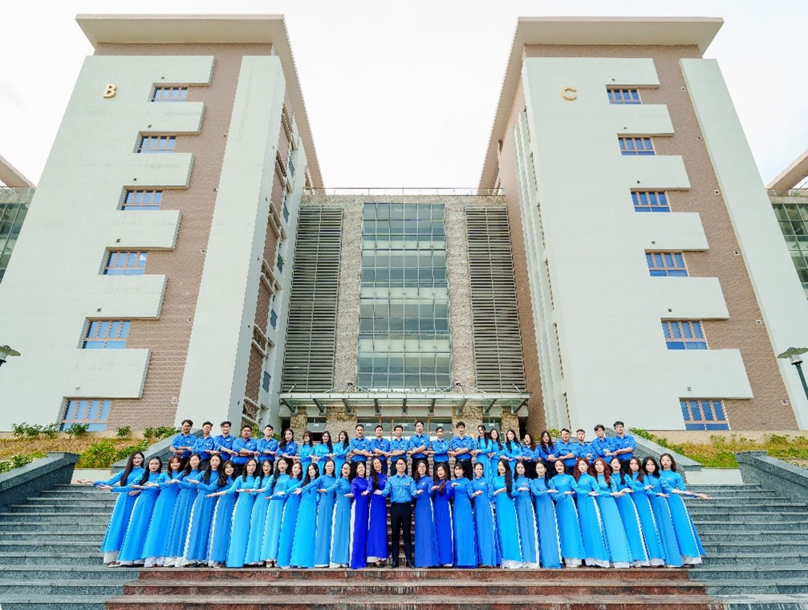
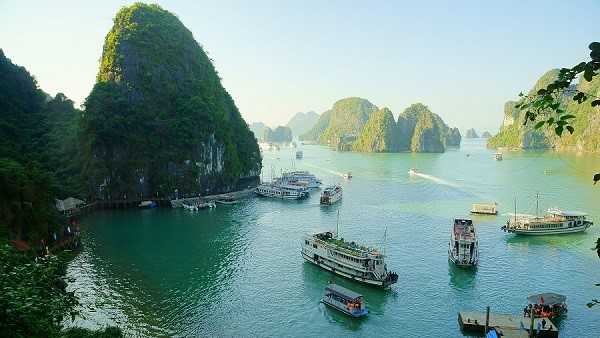
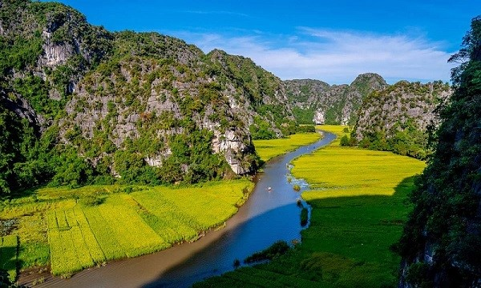
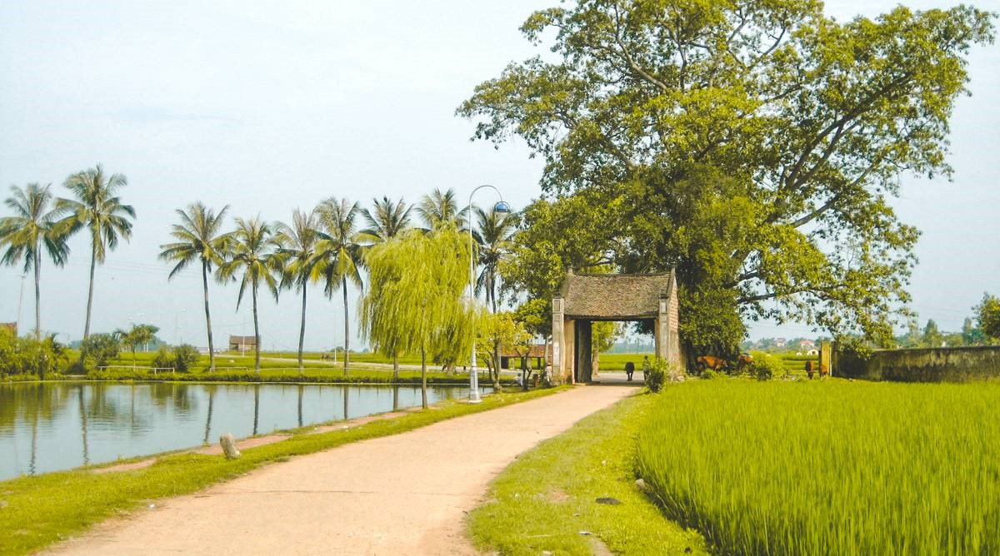
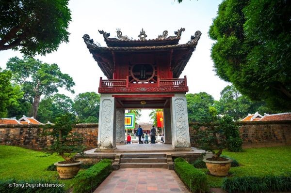
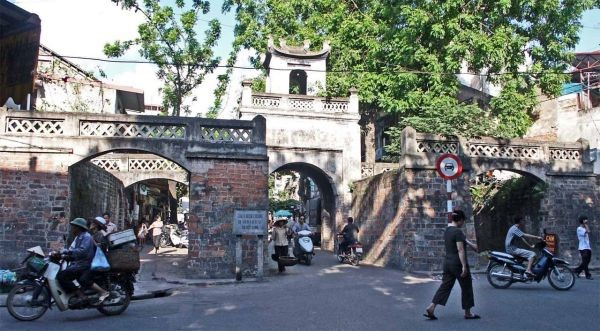
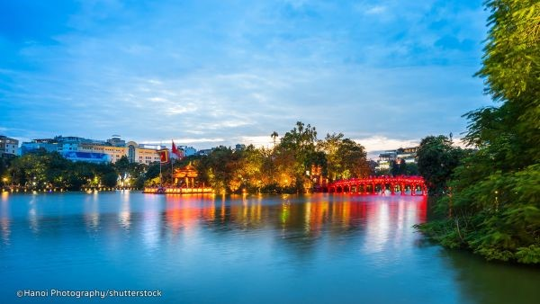

Venue
Academy of Finance
58 Le Van Hien, Duc Thang Ward, North Tu Liem District, Hanoi, Vietnam
or Hoa Lac High-Tech Industry Campus

Everything you need to know about the SEDBM 2026 venue, travel and stay in Hanoi
Academy of Finance
58 Le Van Hien, Duc Thang Ward, North Tu Liem District, Hanoi, Vietnam
or Hoa Lac High-Tech Industry Campus


A UNESCO World Heritage Site, beautiful Halong Bay is one of Vietnam's most popular tourist attractions, famous for its thousands of limestone islets of all different shapes and sizes rising up from the bay's emerald waters.
Without a doubt, Halong Bay should be on every traveler's bucket list who enjoys gorgeous natural seascapes. Navigating a Halong Bay trip usually involves two steps: Firstly, deciding how to travel from Hanoi to Halong Bay, and secondly, choosing from between hundreds of boats that ply the waters of Halong Bay on day, overnight and multi-day cruises.

Far too few travellers make it to Ninh Binh, a mesmerizing area known locally as 'Halong Bay on Land' thanks to its magical riverine landscape, with sheer limestone mountains rising up from the paddies. The best way to get a sense of this UNESCO-protected site is by taking a paddleboat tour along its shimmering rivers, and climbing to the top of its fabled peaks.

Đường Lâm Ancient Village is a well-preserved traditional village located about 50 kilometers west of Hanoi, Vietnam. It is famous for its ancient houses made of laterite and its unique architecture reflecting northern Vietnamese rural culture. The village is often called a "living museum" of Vietnamese history and heritage. It is also the birthplace of two national heroes: Phùng Hưng and Ngô Quyền. Visitors come to Đường Lâm to explore its historical charm, peaceful scenery, and cultural richness.
Information on visa procedures for international delegates attending SEDBM 2026 is currently being updated by the organising committee. Please check back closer to the conference date, or contact us directly for assistance.
For visa support letters and invitation documents, please email aof_sedbm@hvtc.edu.vn.

The Temple of Literature is often cited as one of Hanoi's most picturesque tourist attractions. Originally built as a university in 1070 dedicated to Confucius, scholars and sages, the building is extremely well preserved and is a superb example of traditional-style Vietnamese architecture.
This ancient site offers a lake of literature, the Well of Heavenly Clarity, turtle steles, pavilions, courtyards and passageways that were once used by royalty. Visiting the Temple of Literature you will discover historic buildings from the Ly and Tran dynasties in a revered place that has seen thousands of doctors graduate in what has now become a memorial to education and literature.

Located in the middle of Hanoi, a rapidly developing city where changes take place every hour, Hanoi Old Quarter with its old-styled narrow streets full of antique brick houses seems to nostalgically resist the flow of time while still actively trying to adapt to the dynamic atmosphere of the modern city.
Once a bustling area where merchants and artisans gathered to sell their products, Hanoi Old Quarter consists of many small, meandering streets, each bearing the name of the goods that was specifically traded there such as Hang Bac (Silver Product), Hang Ma (Paper Product), Hang Go (Wood Product), just to name a few.

Hoan Kiem Lake in Hanoi attracts tourists and locals looking to get away from the noise and frenetic pace of the city. Peaceful and quiet, the lake surrounds Ngoc Son Temple, an 18th century pagoda sitting on a small island that's accessible via an ornate wooden bridge.
Inside the temple are several altars dedicated to military leader Tran Hung Dao, a large bronze bust, some ancient artefacts including ceramics, and a preserved specimen of a giant turtle found in the lake weighing 250kg.
Hanoi is served by Noi Bai International Airport (HAN), located approximately 30 km north of the city centre and well-connected to most major Asian, European and Middle-Eastern hubs. Taxis, ride-hailing apps and airport shuttle buses are readily available for transfers to the city and to the conference venue.
A list of recommended hotels near the Academy of Finance and convenient transport routes to the conference venue will be published here as the conference date approaches. Delegates are encouraged to book accommodation in advance, especially during the November peak season.
For accommodation enquiries or special arrangements, please contact aof_sedbm@hvtc.edu.vn.